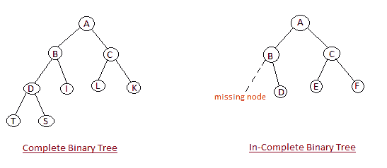
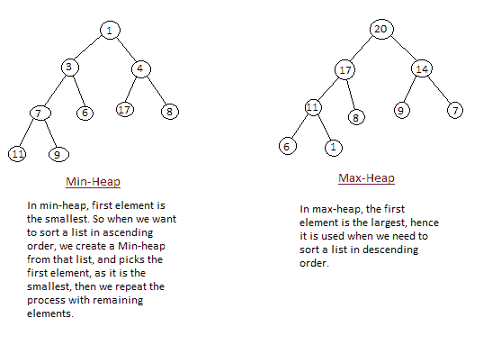

堆排序算法
堆排序是最好的排序方法之一，并且没有二次最坏情况运行时间。堆排序包括从给定的数组构建一个堆数据结构，然后利用堆对数组进行排序。
您一定想知道，将数字数组转换为堆数据结构将如何帮助对数组进行排序。为了理解这一点，让我们从理解什么是堆开始。
注意:如果不熟悉数据结构中的排序，首先要学习什么是排序了解排序的基础知识。
什么是堆？
堆是一种特殊的基于树的数据结构，它满足以下特殊的堆属性:
Shape Property: Heap data structure is always a Complete Binary Tree, which means all levels of the tree are fully filled.

Heap Property: All nodes are either greater than or equal to or less than or equal to each of its children. If the parent nodes are greater than their child nodes, heap is called a Max-Heap, and if the parent nodes are smaller than their child nodes, heap is called Min-Heap.

堆排序是如何工作的？
堆排序算法分为两个基本部分:
- 创建未排序列表/数组的堆。
- 然后，通过重复从堆中移除最大/最小的元素，并将其插入到数组中，来创建排序数组。每次移除后都会重建堆。
最初在收到未排序的列表时，堆排序的第一步是创建一个堆数据结构(最大堆或最小堆)。一旦构建了堆，堆的第一个元素要么是最大的，要么是最小的(取决于最大堆还是最小堆)，所以我们将堆的第一个元素放在数组中。然后我们再次使用剩余的元素创建堆，再次选择堆的第一个元素并将其放入数组。我们不断重复这样做，直到我们的数组中有完整的排序列表。
在下面的算法中，最初调用heapsort()函数，该函数调用heapify()来构建堆。
实现堆排序算法
下面我们有一个实现堆排序算法的简单 C++ 程序。
/* Below program is written in C++ language */
#include <iostream>
using namespace std;
void heapify(int arr[], int n, int i)
{
int largest = i;
int l = 2*i + 1;
int r = 2*i + 2;
// if left child is larger than root
if (l < n && arr[l] > arr[largest])
largest = l;
// if right child is larger than largest so far
if (r < n && arr[r] > arr[largest])
largest = r;
// if largest is not root
if (largest != i)
{
swap(arr[i], arr[largest]);
// recursively heapify the affected sub-tree
heapify(arr, n, largest);
}
}
void heapSort(int arr[], int n)
{
// build heap (rearrange array)
for (int i = n / 2 - 1; i >= 0; i--)
heapify(arr, n, i);
// one by one extract an element from heap
for (int i=n-1; i>=0; i--)
{
// move current root to end
swap(arr[0], arr[i]);
// call max heapify on the reduced heap
heapify(arr, i, 0);
}
}
/* function to print array of size n */
void printArray(int arr[], int n)
{
for (int i = 0; i < n; i++)
{
cout << arr[i] << " ";
}
cout << "\n";
}
int main()
{
int arr[] = {121, 10, 130, 57, 36, 17};
int n = sizeof(arr)/sizeof(arr[0]);
heapSort(arr, n);
cout << "Sorted array is \n";
printArray(arr, n);
}
堆排序的复杂度分析
最坏情况时间复杂度: O(n*log n)
最佳案例时间复杂度: O(n*log n)
平均时间复杂度: O(n*log n)
空间复杂度: O(1)
- 堆排序不是稳定排序，对列表排序需要恒定的空间。
- 堆排序非常快，被广泛用于排序。
现在我们已经学习了堆排序算法，您也可以查看这些排序算法及其应用: